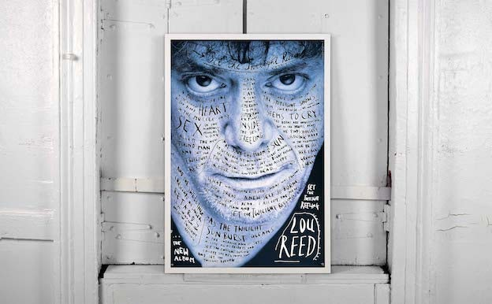

Stefan Sagmeister
What has Stefan Sagmeister taught me about design?

Introduction
Stefan Sagmeister is a graphic designer, storyteller and typographer who stretches the boundaries of creativity, creating work that is provocative, unorthodox and unmistakably his. His distinctive work has made him stand out from the crowd, but what is it that makes Sagmeister the driving force of an industry? This essay will explore why Sagmesiter’s work is inspiring and highly regarded by many aspiring designers. Looking at the defining pieces of work in Sagmeister’s career, I will analyse the impact they have had on the design world and on myself as a designer.
Early Life and Influences
Born in Austria in 1962, it is rumored that his design career began as early as fifteen when he started writing for Alphorn an Austrian youth magazine. According to Heller (2013) he wasn’t working there for long before realising he preferred to work on the layouts rather than writing the articles. Sagmeister studied at the University of Applied Arts Vienna, later receiving a scholarship for the Pratt Institute in New York. In 1991, he moved to Hong Kong to work with Leo Burnett's Hong Kong Design Group.
With Sagmeister being one of the most original and innovative artists it is interesting to learn who influenced him as a design student. Heller (2013) adds that labelled design ‘bad boy’ Tibor Kalman, graphic designer and creator of M&Co, is cited as the single most influential person in Sagmesiter’s life and his design ‘hero’. Sagmeister has shown his persistency and commitment from an early age as he called Kalman every week for a year and half until he agreed to meet with him, eventually offering him a job at M&Co.
Kalman presented himself as social activist who promoted important causes such as environmentalism and economic equality through his work (Heller, 1999). It is easy to see why Sagmeister looked up to Tibor Kalman as the two are very alike and trail blazers in their industry. They both used their influence as designers to promote causes they believed in. Tibor Kalman is regarded highly for his work in Colors magazine that focused on multiculturalism and global awareness. I admire Tibor Kalman for breaking through the stereotypes in print at this time and creating images that were somewhat uneasy for viewers as they portrayed social issues that some would find distasteful.
His Work/Controversy
Sagmeister Inc
After many years in industry, Sagmeister began to diversify and started his own creative company Sagmesiter Inc, in 1993. His early work focused on the music industry, during this time he gained two Grammys for his album cover designs. His famous clients included The Rolling Stones, Aerosmith, Jay Z and Pat Metheny. One of his most iconic pieces is a poster for the album of artist Lou Reed. This poster gained Sagmeister a lot of attention for his striking use of handwritten typography. It gives the sense of unease and magnitude through his use of colour and the prominence of the subject’s face. Pearlman (2005) states that Sagmeister’s CD covers introduced a new standard, describing them as intense, cunning and evocative.
Sagmeister makes it very clear that he believes in working with different mediums and against ‘the norm’ of design. He often demonstrates through his work pain and self-sacrifice as a designer. He created the lecture poster, AIGA Detroit 1999, in which he had an intern carve into his skin as he said that doing this digitally would not have had the same affect. This is the truth as two decades later the work is still as controversial and evocative as it was then. I think that this piece shows what a striking and humorous style he had, quite different to the graphic designers at this time. One of the qualities I admire most of Sagmeister as a designer is his ability to take risks and not being afraid of failing in the process.

In 2003 he created the Sagmeister on a Binge exhibition poster, for which he ate 100 different junk foods, gaining almost two stone in just a week and took before and after pictures of his semi-nude body. Many say that Sagmeister’s work is for grabbing media attention only and misrepresents graphic designers. However, I would disagree and defend the choices of his darker and boldest work as it invites strong public opinion and therefore his pieces rarely go unnoticed. Sagmeister is a talented designer that offers a lot to the industry and drives it forward, his work does not exist for the sake of being controversial but invites intellectual debate.
Many people look at Sagmesiter’s work in a negative light as he takes a diverse approach to his designs that some may see as ill-favored. As a designer is it important to be conscious of the struggles in the world and be aware of those less fortunate when designing. Sagmeister has received a lot of backlash in the past for his piece Banana Wall. Described as distasteful, a wall adorned with over 10,000 bananas at varying stages of ripeness that, for a limited time displayed the phrase ‘Self-confidence produces fine results’ before rotting away completely, it was heavily criticized for its wastefulness (Vit, 2020). It is important for young designers to see that some designs can cause offence and realise that it is important to be socially responsible. Perhaps part of Sagmeister’s legacy is for other designers to learn from his mistakes.
Sagmeister&Walsh
In June 2012, after two years of working as a designer at Sagmeister Inc, Jessica Walsh became a partner. To announce the new partnership and renaming of the firm to Sagmeister&Walsh, the pair released a photo of themselves naked in their office. Walsh’s signature style has been described as bold, emotional and provocative making her the perfect fit as Sagemister’s business partner (Heller, 2013). As Sagmeister&Walsh they produce self-initiated creative arts projects, Sagmeister creates non-commercial work and Walsh creates branding & advertising work (Sagmeister & Walsh, 2020).
One of my favourite projects from Sagmeister&Walsh is their most recent ‘Beauty Book’ (Sagmeister et al, 2018). The book looks at how beauty has been displaced by functionality in design and how this can be reversed. I think that this is a very interesting concept as it makes us think as designers beyond ourselves and our personal taste as what is beautiful to someone is not to another and they are able to create work that sparks debate and conversation through this project. It makes us consider the transformative power of beautiful design and the impact that this has emotionally on the viewer.
Personal Life and Sabbaticals
Being the successful and renowned designer that he is has allowed Sagmeister to take a yearlong sabbatical from commercial projects every seven years. This time allows him to travel the world and explore new concepts and ideas that inspire his personal projects. These sabbaticals have proved to be beneficial to the designer as he credits this for many of his best projects. I think that this is an important lesson for any designer, although a year off isn't achievable for everyone, it is important to find inspiration and balance in their lives that will rejuvenate and enrich their designs.
Sagmeister has worked on many projects over his career and this includes writing books. The concept of his book ‘Made You Look’ emphasizes to designers that while showcasing their best work is valuable, it is also equally as important to hold on to the bad work (Hall et al, 2009).
“It is very important to embrace failure and to do a lot of stuff — as much stuff as possible — with as little fear as possible. It’s much, much better to wind up with a lot of crap having tried it than to overthink in the beginning and not do it” (Sagmeister, 2014).
I think that this is one of the most beneficial and important things that I or any designer can take from studying Sagmeister. He showcases the importance of learning from the past, good or bad, because, in a sense mistakes and bad designs can be the foundation for brilliance.
Conclusion
In conclusion, Sagmeister is a designer who is not afraid to take risks, challenges the conventions of graphic design and offers new possibilities (Park, 2017). I admire him and have learnt, where possible, to push the boundaries of what I can achieve in my work. Sagmeister has shown throughout his career interest in a wide variety of topics, he never continues doing the same thing and this is what pushes him to create original and innovative work. This is an important lesson to learn from Sagmeister, trying something different and exploring different themes and interests is what enables artists to create authentic, personal work. For me his work always evokes emotion, whether this be by beauty, wit or shock and this is what elevates him as designer and inspires me to do the same.